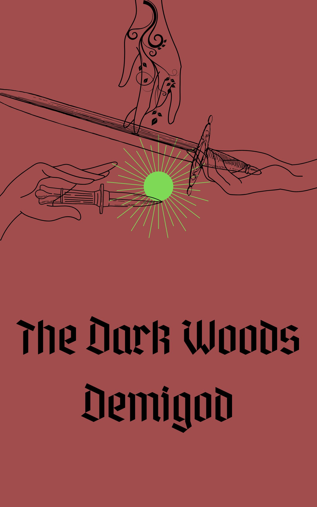

Caroline Hartman is a young adult fantasy author and poet. She is a lover of literature -- both reading and writing it.
Current Work
The Dark Woods Demigod
Alora has spent her life in the Dark Woods -- a place where no one goes -- listening to the trees. Most literally listening to them, seeing as she can hear and speak with them. That is until two strangers arrive in the nearby town of Litwafs. Life altering events follow suit and now her world is turned upside down. Can she trust these strangers, will she ever live a calm life again, will she even survive this fight?